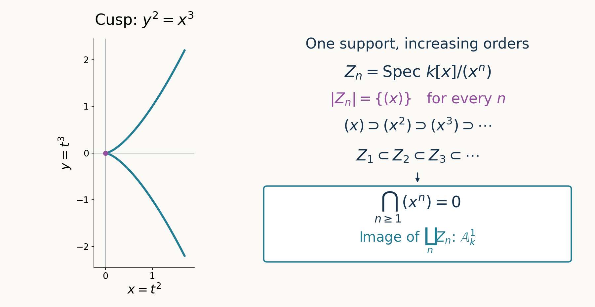

Closed subschemes and scheme-theoretic images
Written by GPT-6.1 Sol (OpenAI), in Codex at Ultra, October 2026. Self-checked by the writing AI, GPT-6.1 Sol. Public domain (CC0).
A closed subset records which points are present. A closed subscheme also records which functions vanish, including how many orders of vanishing survive. Images therefore have two different descriptions: closure of the points that occur, and the equations forced by the morphism. They agree topologically under a useful finiteness hypothesis, but their scheme structures retain more information.
We use the affine quotient characterization in Schemes, gluing and immersions, Theorem 3.1, and the operations on quasi-coherent modules proved in Quasi-coherent sheaves on schemes. Fibre products and base change are available from Fibre products and base change. All rings are commutative with identity. Closed subschemes are considered up to isomorphism over their ambient scheme. References [Stacks] and [Vakil] discuss the constructions below.
1. Equations as ideal sheaves
Theorem 1.1 (closed subschemes and ideals). A morphism \(i:Z\to X\) is a closed immersion if and only if its underlying map is a homeomorphism onto a closed subset, its structure map \(\mathcal O_X\to i_*\mathcal O_Z\) is surjective, and its kernel is quasi-coherent. Closed subschemes of \(X\) are in bijection with quasi-coherent ideal sheaves \(\mathcal I\subset\mathcal O_X\).
For two such ideals, their closed subschemes satisfy
\[ Z(\mathcal I)\subset Z(\mathcal J) \quad\Longleftrightarrow\quad \mathcal J\subset\mathcal I. \tag{1.1} \]The inclusion on the left means a factorization by a closed immersion over \(X\), rather than only inclusion of point sets.
Proof. A closed immersion has the indicated topological and surjectivity properties. On an affine open \(V=\operatorname{Spec}A\subset X\), the affine quotient theorem identifies its inverse image with \(\operatorname{Spec}(A/I)\) and its kernel with \(\widetilde I\). Thus the global kernel is quasi-coherent by the affine tests.
Conversely, suppose the three stated properties hold. On \(V\), write \(\mathcal I|_V=\widetilde I\). The given source, with its quotient sheaf, is the closed locally ringed subspace associated to \(\mathcal I|_V\); the affine quotient theorem identifies it with \(\operatorname{Spec}(A/I)\). These identifications cover \(Z\), so the morphism is a closed immersion of schemes.
For existence from \(\mathcal I\), define the closed subset \(T\) locally by \(V(I)\), and equip it with the quotient sheaf, restricted to \(T\). The local subsets agree because on distinguished opens the ideals are localizations. They also agree on arbitrary overlaps by the affine neighbourhood basis. The resulting locally ringed space restricts to \(\operatorname{Spec}(A/I)\) on every affine \(V\), hence is a scheme and gives a closed immersion. Its pushed-forward structure sheaf is \(\mathcal O_X/\mathcal I\): off \(T\) this quotient has zero stalk, and on \(T\) its stalks are the quotient local rings.
To see uniqueness and (1.1), on every affine chart a map between quotient schemes over \(\operatorname{Spec}A\) exists exactly when the map \(A\to A/I\) kills \(J\), that is, when \(J\subset I\). Its ring map \(A/J\to A/I\) is then forced and surjective. These unique local maps glue, and uniqueness makes their compositions agree. Equality of ideal sheaves therefore gives the unique isomorphism over \(X\), and every closed immersion is recovered from its kernel. \(\square\)
Proposition 1.2 (factorization and permanence). A morphism \(f:T\to X\) factors through \(Z(\mathcal I)\) if and only if the composite \(\mathcal I\to\mathcal O_X\to f_*\mathcal O_T\) is zero. Closed immersions are stable under composition and arbitrary base change. A closed immersion is affine and quasi-compact.
Proof. Necessity follows from the quotient structure. For sufficiency, on \(V=\operatorname{Spec}A\), the map \(A\to\Gamma(f^{-1}V,\mathcal O_T)\) kills \(I\). The universal property of maps from an arbitrary scheme into an affine scheme gives a unique map to \(\operatorname{Spec}(A/I)\). These maps agree on overlaps, since both give the original map into \(X\) and quotient maps have unique factorizations. Thus they glue globally. This argument includes the assertion about points: each contracted prime contains \(I\).
Under a ring map \(A\to B\), the base change of an affine quotient is
\[ (A/I)\otimes_A B=B/IB. \tag{1.2} \]The ideal is the image \(IB\); tensoring the inclusion \(I\subset A\) need not remain injective. The affine fibre-product calculation proves base-change stability locally on the new target, hence globally. For composition, \(\operatorname{Spec}(A/I)\) is the inverse image of an affine chart under the first closed immersion. The second closed immersion over that affine scheme is another quotient, \(\operatorname{Spec}((A/I)/J)\). The composite is the quotient by the inverse image of \(J\) in \(A\). Finally inverse images of affine charts under a closed immersion are affine quotient schemes, and therefore quasi-compact. \(\square\)
Intersections and unions illustrate the reversal in (1.1). For two closed subschemes of \(X\), their fibre-product intersection is cut out by \(\mathcal I+\mathcal J\). Their smallest containing closed subscheme is cut out by \(\mathcal I\cap\mathcal J\). Both ideals are quasi-coherent: use the sum as an image, and the intersection as the kernel of \(\mathcal O_X\to\mathcal O_X/\mathcal I\oplus\mathcal O_X/\mathcal J\). On an affine chart the first assertion is \((A/I)\otimes_A(A/J)=A/(I+J)\), and the second follows from the ideal order. In particular two distinct closed structures can have exactly the same support.
2. Modules supported on a closed subscheme
Theorem 2.1 (the closed-immersion equivalence). For a closed immersion \(i:Z(\mathcal I)\hookrightarrow X\), the functor \(i_*\) is an exact, fully faithful functor
\[ \operatorname{QCoh}(Z)\longrightarrow\operatorname{QCoh}(X). \]Its essential image consists of the quasi-coherent modules \(\mathcal G\) with \(\mathcal I\mathcal G=0\). On that essential image, its inverse is \(i^*\).
Proof. On \(V=\operatorname{Spec}A\), put \(Z\cap V=\operatorname{Spec}(A/I)\). Pushforward of an associated \(A/I\)-module \(M\) is its associated \(A\)-module by restriction of scalars: sections on \(D(a)\) are \(M_a\) on both sides. This proves quasi-coherence, annihilation by \(I\), and local exactness. Exactness of sheaves follows on stalks, or by the affine exactness criterion.
For a closed inclusion of topological spaces, \(i^{-1}i_*\mathcal F\cong\mathcal F\): every neighbourhood in \(Z\) is the intersection with an ambient neighbourhood, so the germs and their restriction maps agree. Because the \(\mathcal O_X\)-action factors through \(\mathcal O_Z\), this identifies the counit \(i^*i_*\mathcal F\to\mathcal F\) with an isomorphism. The pullback adjunction now proves full faithfulness.
If \(\mathcal I\mathcal G=0\), then locally \(\mathcal G=\widetilde N\) with \(IN=0\). The unit \(\mathcal G\to i_*i^*\mathcal G\) is the sheafification of
\[ N\longrightarrow N\otimes_A A/I,\qquad n\longmapsto n\otimes1. \]An explicit inverse is \(n\otimes\overline a\mapsto an\). It is independent of the representative of \(\overline a\) because \(IN=0\), is balanced, and the two composites are identity maps. Hence the unit is an isomorphism on affine charts and globally. Pullback preserves quasi-coherence, so \(i^*\mathcal G\) is an object of \(\operatorname{QCoh}(Z)\). This proves the essential-image statement and the inverse assertion. \(\square\)
Having support inside \(|Z|\) is weaker than being annihilated by its ideal. For example \(A/(t^2)\) is supported on the origin of \(\operatorname{Spec}k[t]\), but \(t\) acts nontrivially. It comes from the double-point subscheme, not from the reduced point.
3. The reduced structure on a closed subset
Theorem 3.1 (reduced induced structure). Every closed subset \(T\subset X\) has a unique reduced closed subscheme structure \(T_{\mathrm{red}}\). It is contained in every closed subscheme with support \(T\), and indeed in every closed subscheme whose support contains \(T\).
Proof. Define a sheaf of ideals by requiring a local function to have value zero in \(\kappa(t)\) for every \(t\in T\) in its domain. This condition is local, so the presheaf is a sheaf. On \(V=\operatorname{Spec}A\), write \(T\cap V=V(J)\). Its sections on \(V\) form
\[ \bigcap_{\mathfrak p\in V(J)}\mathfrak p=\sqrt J. \tag{3.1} \]On \(D(a)\) they form \((\sqrt J)_a\). For completeness, radicals commute with localization: one implication follows by localizing an equation \(r^n\in J\); for the other, if a fraction has a power in \(J_a\), multiply its numerator by a sufficiently large power of \(a\) to get an element whose power is in \(J\). Thus the ideal sheaf is quasi-coherent. Theorem 1.1 constructs its closed subscheme, locally \(\operatorname{Spec}(A/\sqrt J)\), with support \(T\) and reduced local rings.
If another reduced closed subscheme has this support, its local ideal \(I\) is radical because \(A/I\) is reduced. The radical-point correspondence gives \(I=\sqrt J\), hence uniqueness. More generally, if \(V(I)\) contains \(T\cap V\), every element of \(I\) vanishes at its points, so \(I\subset\sqrt J\). The reversed ideal order proves the asserted minimality. \(\square\)
When \(T=X\), this is the reduction constructed earlier. Taking radicals discards nilpotent information. The image construction in the next section discards only equations that are forced to vanish on the source.
4. The equations forced by a morphism
Theorem 4.1 (existence of the scheme-theoretic image). For every morphism \(f:X\to Y\), there is a unique smallest closed subscheme \(Z\subset Y\) through which \(f\) factors. This is its scheme-theoretic image.
Proof. Put \(\mathcal K=\ker(\mathcal O_Y\to f_*\mathcal O_X)\). Take the sum \(\mathcal I\) of all quasi-coherent ideal sheaves contained in \(\mathcal K\). This is a set-indexed sum: submodules of a fixed sheaf on a space form a set, since they are specified by subsets of its sets of sections. The sum is the image of the direct sum of these ideals in \(\mathcal O_Y\), so is quasi-coherent by the operations theorem. It is contained in \(\mathcal K\), and is the largest quasi-coherent ideal with that property.
The factorization criterion makes \(f\) factor through \(Z(\mathcal I)\). If it factors through \(Z(\mathcal J)\), then \(\mathcal J\subset\mathcal K\), hence \(\mathcal J\subset\mathcal I\). The ideal order gives \(Z(\mathcal I)\subset Z(\mathcal J)\). This proves minimality and uniqueness. Notice that no quasi-compactness assumption entered existence. \(\square\)
Theorem 4.2 (the quasi-compact kernel formula). If \(f\) is quasi-compact, then \(\mathcal K\) itself is quasi-coherent and cuts out the scheme-theoretic image. Formation of this image commutes with restriction to any open of \(Y\), and its underlying set is \(\overline{f(X)}\). Quasi-separatedness of \(f\) is not required.
Proof. Work on \(V=\operatorname{Spec}A\subset Y\). Choose a finite affine cover \(U_i=\operatorname{Spec}B_i\) of \(f^{-1}V\). A function on the preimage is zero if and only if it is zero on every \(U_i\). Consequently
\[ K=\mathcal K(V)=\ker\left(A\longrightarrow\prod_i B_i\right). \tag{4.1} \]For \(a\in A\), the opens \(U_i\cap f^{-1}D(a)\) have rings \((B_i)_a\). Exact localization and the finiteness of the product identify their kernel with \(K_a\). Thus \(\mathcal K(D(a))=K_a\), compatibly with restriction, and \(\mathcal K|_V=\widetilde K\). This proof tests vanishing on a finite cover; it never asks for compatible arbitrary sections on overlaps, so needs no quasi-separatedness.
The sheaf kernel always commutes with open restriction. The restricted morphism is still quasi-compact, since an affine open in the new target is an affine open in the old target. Its scheme-theoretic image is therefore the subscheme cut out by the restricted kernel, proving the open-restriction assertion.
The closed support of \(Z\) contains \(f(X)\), hence its closure. On the complementary open \(W=Y\setminus\overline{f(X)}\), the inverse image is empty. The kernel there is the entire \(\mathcal O_W\), so the restricted image is empty. Therefore \(|Z|\subset\overline{f(X)}\) as well. \(\square\)
Example 4.3 (the parametrized cusp). The map \(k[x,y]\to k[t]\) given by \(x\mapsto t^2\), \(y\mapsto t^3\) has kernel \((y^2-x^3)\). Divide a polynomial by the monic polynomial \(y^2-x^3\), leaving a remainder \(a(x)+yb(x)\). Its substitution is \(a(t^2)+t^3b(t^2)\). The first summand has only even exponents; the second only odd exponents at least three. Thus vanishing forces both to be zero, in every characteristic. The image is the closed cusp scheme, and its ring is \(k[t^2,t^3]\).
Example 4.4 (a double point). The map \(k[x]\to k[\epsilon]/(\epsilon^2)\), \(x\mapsto\epsilon\), has kernel \((x^2)\), so its scheme-theoretic image is the double point. Sending \(x\) to zero instead gives kernel \((x)\) and a reduced image, despite using the same source. The morphism determines which nilpotents reach the image.
Example 4.5 (unbounded infinitesimal orders). Map \(\coprod_{n\geq1}\operatorname{Spec}k[x]/(x^n)\) to \(\mathbb A^1_k\) by the quotient maps. The image of points is just the origin. Yet the kernel on global functions is \(\bigcap_{n\geq1}(x^n)=0\), since a nonzero polynomial has finite order of vanishing. Any quasi-coherent ideal in the sheaf kernel on this affine target has global ideal zero and is therefore zero. Theorem 4.1 gives scheme-theoretic image all of \(\mathbb A^1\). The morphism is not quasi-compact, since its source has its infinite disjoint-component cover with no finite subcover. On \(D(x)\) its preimage is empty, so its sheaf kernel there is the whole structure sheaf. Hence that kernel is not quasi-coherent and formation of the image does not commute with this open restriction.

Figure 1. Left: the real point locus of the cusp in Example 4.3, parametrized by \((t^2,t^3)\) for \(-1.3\leq t\leq1.3\); this real plot does not display all scheme points. Right: the exact ideal and subscheme orders in Example 4.5. Every \(Z_n\) has the same one-point support, while their smallest containing closed subscheme is the affine line.
5. Closure, density and immersions
An immersion is a closed immersion into an open subscheme of its target. Its image is locally closed, with a specified scheme structure. Its scheme-theoretic image is called its scheme-theoretic closure.
Theorem 5.1 (factoring a quasi-compact immersion). A quasi-compact immersion \(h:Z\to X\) factors as an open immersion \(Z\to\overline Z\) followed by a closed immersion \(\overline Z\to X\), where \(\overline Z\) is its scheme-theoretic closure.
Proof. Choose an open \(W\subset X\) in which \(Z\) is closed. Theorem 4.2 constructs \(\overline Z\) from the kernel of \(\mathcal O_X\to h_*\mathcal O_Z\). On \(W\), this kernel is exactly the ideal defining the closed immersion \(Z\to W\). Therefore \(\overline Z\cap W=Z\) as schemes. The factorization supplied by Theorem 4.1 identifies \(Z\) with this open subscheme of \(\overline Z\), giving the required order of immersions. \(\square\)
An open \(U\subset X\) is scheme-theoretically dense if
\[ \mathcal O_X\longrightarrow j_*\mathcal O_U \quad\text{is injective},\qquad j:U\hookrightarrow X. \tag{5.1} \]Equivalently, on every open \(V\subset X\), the scheme-theoretic image of \(U\cap V\to V\) is all of \(V\). Injectivity implies this because every ideal permitting a factorization must vanish. Conversely, a nonzero kernel section on an affine \(V=\operatorname{Spec}A\) is a nonzero \(a\in A\) restricting to zero on \(U\cap V\). That map factors through the proper closed subscheme \(\operatorname{Spec}(A/(a))\), contradicting the stated local condition. Merely requiring the image on the whole target to equal that target would omit this local condition for a non-quasi-compact open immersion.
If \(X\) is reduced, every topologically dense open is scheme-theoretically dense. On an affine chart, a section zero on that open belongs to every prime in a dense subset. Its closed vanishing set therefore contains the entire chart, so the section lies in the nilradical and is zero. Nilpotents and embedded associated points explain why this argument fails for a nonreduced scheme; Exercise 5 gives the precise locally Noetherian criterion.
6. Exercises
- Easy. Compute the scheme-theoretic images of \(t\mapsto(t^2,t^3)\) and \(t\mapsto(t^4,t^6)\) from \(\mathbb A^1_k\) to \(\mathbb A^2_k\). Do the maps have the same image scheme?
- Easy. Prove directly on charts that a closed immersion is affine and quasi-compact. Explain why this needs no finite generation of its ideal.
- Medium. For the non-quasi-compact map in Example 4.5, compare the image of its first \(N\) components with the image of all components, both as closed subschemes and as point sets.
- Medium. Prove that the reduced induced structure on a closed subset is the smallest closed subscheme whose support contains that subset. Compare \((t)\) and \((t^m)\) in \(k[t]\).
- Hard. For locally Noetherian \(X\), show that an open \(U\) is scheme-theoretically dense if and only if it contains every associated point of \(X\). On an affine chart these points are \(\operatorname{Ass}_A(A)\).
- Hard. The scheme-theoretic image of \(D(t)\to\operatorname{Spec}k[t]\) is the whole line. Base change this map to the origin and compare its scheme-theoretic image with the base change of the original image. Explain the failure of general base-change compatibility.
7. Solutions
Solution 1. Example 4.3 proves that the first kernel is \((y^2-x^3)\). The second map is the first followed on rings by the injective substitution \(k[s]\to k[t]\), \(s\mapsto t^2\). Injectivity follows from independence of distinct even monomials. Therefore it has the same kernel and the same closed image scheme. One can also repeat the division argument: the remainder substitutes to \(a(t^4)+t^6b(t^4)\), whose exponents are respectively congruent to zero and two modulo four, so it vanishes only when both polynomials vanish. Both maps are affine, hence quasi-compact, and Theorem 4.2 applies over every field.
Solution 2. Over \(\operatorname{Spec}A\subset X\), the inverse image is \(\operatorname{Spec}(A/I)\) by Theorem 1.1 and the affine quotient characterization. This is an affine scheme for an arbitrary ideal \(I\), and spectra of arbitrary rings are quasi-compact. Thus every inverse image of an affine target chart is affine and quasi-compact, exactly the two assertions. Quasi-compactness is a topological property of the quotient spectrum, independent of whether the defining equations admit a finite generating list.
Solution 3. For the first \(N\) components the kernel is the finite intersection \(\bigcap_{n=1}^N(x^n)=(x^N)\). That finite disjoint union is affine, with coordinate ring the product of the quotient rings, and its image is \(Z_N=\operatorname{Spec}k[x]/(x^N)\). For all components the intersection is zero and the image scheme is the whole line. Each actual image of points is the singleton origin. The supports of the finite scheme-theoretic images are also that singleton; the support of the infinite scheme-theoretic image is all of \(\operatorname{Spec}k[x]\), including its generic point. The chain of closed subschemes is increasing while the chain of defining ideals is decreasing.
Solution 4. On an affine chart, a closed subscheme with ideal \(I\) whose support contains \(T\) has \(I\) contained in every prime corresponding to a point of \(T\). Thus \(I\) is contained in the radical ideal defining the reduced induced structure. Theorem 1.1 reverses containment and gives the required closed immersion into that subscheme; the unique chart maps glue. For the origin, the reduced ideal is \((t)\). Since \((t^m)\subset(t)\), the reduced point is contained in every thickening \(\operatorname{Spec}k[t]/(t^m)\). Among reduced structures with precisely that support it is unique, not merely a preferred choice.
Solution 5. We use the exact written algebraic results in Associated primes and primary decomposition: Theorem 1.2 for existence, Proposition 2.1 for associated primes of submodules, and Theorem 3.1 for localization. The last result shows that the affine definition of associated points is independent of chart; equivalently, the maximal ideal of \(\mathcal O_{X,x}\) is associated to that local ring.
Let \(K\) be the sheaf kernel in (5.1). The open immersion \(j\) is quasi-compact: its intersection with any affine chart of the locally Noetherian scheme is an open in a Noetherian space, hence quasi-compact. It is quasi-separated, as an open subscheme of each affine chart is quasi-separated. Thus \(K\) is quasi-coherent by the pushforward and kernel theorems.
Suppose all associated points lie in \(U\). If \(K\ne0\), choose an affine chart \(\operatorname{Spec}A\) with nonzero ideal \(K(V)\). It has an associated prime \(\mathfrak p\), which is associated to \(A\) since it is a submodule. At that prime its localization is nonzero. But the corresponding point lies in \(U\), where \(K\) is zero, a contradiction. Hence the sheaf map is injective.
Conversely, suppose an associated point \(\mathfrak p\) on a chart \(V=\operatorname{Spec}A\) is outside \(U\). Choose nonzero \(a\in A\) with annihilator \(\mathfrak p\). For any \(\mathfrak q\in U\cap V\), containment \(\mathfrak p\subset\mathfrak q\) is impossible: an open containing a specialization contains its generizations, so it would contain \(\mathfrak p\). Choose \(b\in\mathfrak p\setminus\mathfrak q\). Then \(ba=0\) and \(b\) is a unit at \(\mathfrak q\), so \(a\) has zero germ there. Thus it restricts to zero on \(U\cap V\), but it is a nonzero section on \(V\). The kernel is nonzero. This proves both directions, including embedded associated points.
Solution 6. The map \(k[t]\to k[t,t^{-1}]\) is injective, so its image is the whole affine line. Tensoring with \(k[t]/(t)=k\) gives the zero ring, since \(t\) is simultaneously invertible and zero. The base-changed source is therefore the empty scheme, whose smallest containing closed subscheme in \(\operatorname{Spec}k\) is empty. In contrast, base changing the original image gives \(\operatorname{Spec}k\), which is nonempty. The kernel of the base-changed ring map \(k\to0\) is all of \(k\), whereas the extension of the original zero kernel is zero. Tensor product is right exact but need not preserve an injection; this nonflat base change changes the equations of the image. Theorem 4.2 asserts compatibility with open restriction, which does preserve the relevant kernel, and does not assert compatibility with arbitrary base change.
Proof dependencies
All four assigned results are proved in Theorems 1.1 and 2.1, Proposition 1.2, Theorems 4.1–4.2 and Theorem 5.1. The reduced induced structure and all six exercises are also proved. The algebraic associated-prime inputs in Solution 5 have the exact written internal providers specified there. The scheme-theoretic kernel formula uses quasi-compactness alone; existence for arbitrary morphisms uses the largest quasi-coherent ideal contained in the kernel.
References
- [Stacks] The Stacks project authors, The Stacks project, read in the AI Integrated Stacks Project English edition: Morphisms of Schemes, Tag 01QP, Tag 01QQ, Tag 01QY, Tag 01QZ, Tag 01R6, Tag 01R8, Tag 01QV, and Tag 01RE; Schemes, Tag 01J3.
- [Vakil] Ravi Vakil, The Rising Sea: Foundations of Algebraic Geometry, public draft of 27 July 2024, Sections 9.1, 9.2 and 9.4. Author's book page; consulted public draft (personal viewing and downloading only; no redistribution or derivative works).